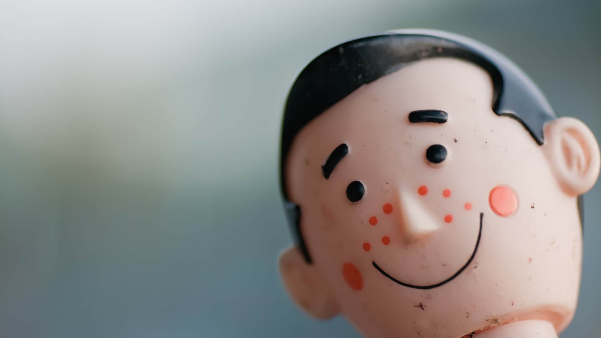

-
Mi práctica docente me enseño a pensar como un design UX
Comprendiendo sus motivaciones, frustraciones y espectativas en el proceso de aprenizaje
-

Me encanta crear nuevas experiencias agradables para mis usuarios
-

La pasión por lo que uno hace es lo que marca la diferencia
Content
Mi nombre es Janna Pérez,tengo 28 años ,actualmente me estoy formando como UX Designer en Laboratoria. Me considero una mujer retadora,siempre dispuesta a salir de su zona de confort, apasionada, transparente y proactiva.Durante mis años en docencia pude descubrir el mundo UX,en el intento por descubrir las motivaciones , frustraciones y espectativas de mis estudiantes en su proceso de aprendizaje. Me gusta diseñar experiencias de usuario nuevas que faciliten la vida al usuario. También tuve la dicha de estudiar Ingeniería de Sistemas que me brindó una perspectiva holística acerca de los sistemas de información.. Designer UX en formación, Bachiller en Ingeniería de Sistemas y Docente de Innovación en Tecnología y Matemáticas..
Content